library(wpgpDownloadR)
# Search for datasets available for Liberia
# usign the ISO3 country code
lbr_datasets <- wpgpListCountryDatasets(ISO3 = "LBR")
lbr_datasets2 Handling of spatial data in R
2.1 Introduction
Geostatistical analysis primarily deals with point-referenced data. However, geostatistical modeling often requires more than just point data—raster and areal (polygon) data are frequently used to build essential covariates, enhance spatial understanding, or provide environmental context. For instance, population density, climate data, land use, and elevation, often key covariates in many spatial analyses, usually come in raster or polygon formats. Efficient handling of these different data types is critical for successful model-building. This chapter provides a comprehensive guide to the various stages of managing spatial data in R, using the sf and terra packages, to support a complete geostatistical workflow.
2.2 Spatial data handling in geostatistical analysis
Throughout a geostatistical analysis, handling spatial data takes place at multiple key stages:
Retrieving External Spatial Data Sources: Before starting the modeling process, one often needs to acquire spatial datasets from external sources to improve model accuracy. These could include satellite-derived environmental variables, population data from WorldPop, or climate data from WorldClim. Acquiring these datasets and ensuring they are in compatible formats and resolutions is an essential early step in spatial analysis.
Importing and Standardizing Spatial Data: Once external data is obtained, it must be imported into R. This involves handling various file formats such as shapefiles or geopackages for vector data and GeoTIFFs for raster data. Moreover, different datasets might use different Coordinate Reference Systems (CRS), requiring CRS standardization to ensure that all datasets align correctly. Failure to standardize CRS can result in spatial misalignments and incorrect results.
Extracting Covariate Information for Modeling: Covariate extraction is an essential step in geostatistical modeling. After importing spatial data, it is necessary to extract relevant covariate information both for the sampled locations (where we have observed data) and the prediction locations (where we wish to make predictions). This step involves linking raster or polygonal covariates—such as climate, population, or land cover data—to the geostatistical data points.
Prediction and Creation of a Spatial Grid: For predictive geostatistical models, a regular grid of points is often created over the study region. Covariates must then be assigned to each grid point to make predictions across the entire region of interest. Creating predictive grids and linking them to the necessary covariates is key to generating continuous spatial predictions from geostatistical models.
Visualizing Spatial Data: Visualization is crucial for exploring spatial data, interpreting model results, and communicating findings. Whether working with point-referenced data, polygons, or rasters, clear and effective visualization helps reveal patterns that inform the modeling process. Effective visualization can also help highlight covariate trends, spatial clusters, and uncertainty in predictions.
2.3 Chapter overview
This chapter introduces methods for handling spatial data at each stage of the geostatistical analysis workflow. You’ll learn how to:
Retrieve covariates from external spatial data sources;
Import and standardize spatial data;
Extract covariates for geostatistical analysis;
Create predictive grids and link them with covariates;
Visualize spatial data effectively to aid in analysis and presentation.
By mastering these steps, you’ll be equipped to handle the complexity of spatial data in geostatistical modeling, enhancing your analyses and improving your predictions.
2.4 Accessing covariates for disease mapping
Covariates can play a crucial role in understanding and modeling the spatial variation in disease risk. In geostatistical analysis, incorporating environmental, demographic, and climatic variables might improve the predictive power of models or at least reduce the level of uncertainty in the predictions. These covariates can influence factors such as the spread of infectious diseases, the distribution of disease vectors, and the socio-economic conditions that impact health outcomes.
A wide range of open-access spatial datasets provide covariates for disease mapping. These include population density, climate, land cover, and human infrastructure data, which often come in raster or polygon formats. Alongside these environmental covariates, administrative boundaries are also crucial for public health analysis, as they help organize and aggregate data at different levels (e.g., country, region, or district). For example, aggregating health outcomes or covariate data by administrative units allows researchers to identify geographic disparities and allocate resources accordingly. Fortunately, open-source platforms such as geoBoundaries provide easily accessible administrative boundary data for many countries at various levels of granularity. This data is available in formats compatible with geospatial analysis tools in R, making it easy to integrate into geostatistical workflows.
Table 2.1 below summarizes key sources of covariates useful in disease mapping. Each dataset offers specific types of data, from satellite-derived environmental variables to gridded population estimates and administrative boundaries, which can be accessed through various R packages or APIs.
MENTION RSPATIAL DATA WEBSITE?? https://rspatialdata.github.io/
| Source | Data Type | Description | R Package |
|---|---|---|---|
| WorldClim | Climate (temperature, rainfall) | Global climate data | geodata |
| MODIS | Remote Sensing | Satellite imagery (e.g., vegetation indices) | MODIStsp |
| OpenStreetMap (OSM) | Human settlements, roads | Global geographic features | osmdata |
| Google Earth Engine | Satellite imagery | Large-scale environmental data analysis | rgee |
| WorldPop | Population data | Gridded population density estimates | worldpop (via API) |
2.4.1 Example: Downloading administrative boundaries
Administrative boundaries provide an essential spatial structure for many types of geostatistical analyses, particularly in disease mapping where data is often aggregated by administrative units such as regions, districsts or provinces. The geoBoundaries datasets, which are accessible via the rgeoboundaries package, provides openly available administrative boundary data for nearly every country, allowing researchers to integrate these boundaries into their analyses seamlessly.
# Load the rgeoboundaries package
library(rgeoboundaries)
# Download administrative boundaries for Liberia (level 0: country)
liberia_admin0 <- gb_adm0("Liberia")
# Do the same for level 1: regions
liberia_admin1 <- gb_adm1("Liberia")
# Plot the administrative boundaries
plot(liberia_admin0$geometry)
plot(liberia_admin1$geometry)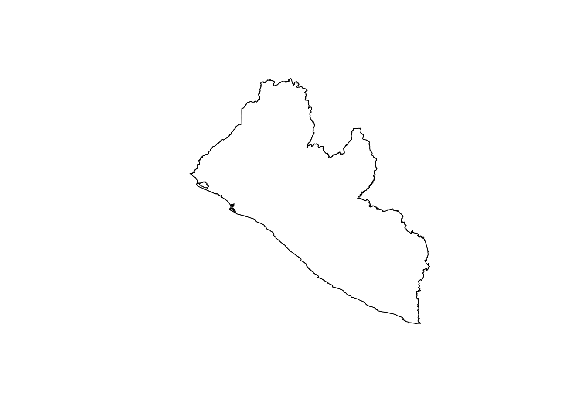
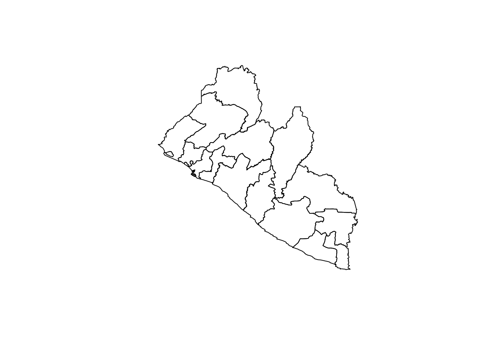
rgeoboundaries package.2.4.2 Example: Download population data
Population density is a key covariate in geostatistical models for public health research. In this section, we demonstrate how to retrieve high-resolution population data for Liberia from WorldPop using the wpgpDownloadR package. This package provides easy access to the WorldPop datasets, which offers gridded population estimates at various spatial resolutions.
Before downloading the data, we will search for available datasets for Liberia. The function wpgpListCountryDatasets() helps in retrieving a list of all available datasets for a specified country.
We can check the description column to see what datasets are available. Let’s download the population data for Liberia for the year 2014 at a 100m resolution. The wpgpGetCountryDataset function will then download a raster dataset based on ISO3 code and covariate name.
lbr_pop_url <- wpgpGetCountryDataset(ISO3 = "LBR", covariate = "ppp_2014") This will download a raster file locally in a temporary directory. The path to the downloaded file is contained in the lbr_pop_url variable and when we introduce the terra package in the next sections we will show how to upoload the population raster into R. It is also possible to specify the directory where we want the raster to be downloaded using the destDir argument.
2.5 Importing and standardizing spatial data
In geostatistical analysis, importing and standardizing spatial data is a critical step to ensure that data from different sources align and can be used effectively. Spatial data, whether it’s vector data (points, lines, polygons) or raster data (grids), can come in various formats and may use different Coordinate Reference Systems (CRS). To perform accurate spatial analyses, it’s essential to import data correctly and ensure consistency in terms of projection and format. This section will cover how to import vector and raster data into R, explain the concept of CRS and sensure that different datasets align properly for subsequent geostatistical analysis.
2.5.1 Importing vector data
Vector data are typically stored in formats such as shapefiles (.shp) or geopackages (.gpkg). The sf (simple features) package in R is the most common tool for handling vector data.
# Load the sf package
library(sf)
# Import a shapefile (e.g., administrative boundaries)
admin <- st_read("path_to_your_shapefile/Admin_Boundaries.shp")
# Inspect the data
print(admin)
plot(admin) # Basic plot of the shapefileThe st_read() function reads various spatial data formats, automatically recognizing file types.
2.5.2 Importing raster data
Raster data consists of a grid of cells, where each cell holds a value representing a spatial attribute such as elevation or temperature. The terra package in R is designed to work with raster data and has superseded the older raster package due to better performance and greater functionality. Let’s see now how to import a GeoTIFF file using terra. We can upload the population raster for Liberia that we have downloaded in Section 2.4.2.
# Load the terra package
library(terra)
# Import a raster file
lbr_pop_100 <- rast(lbr_pop_url)
# Inspect the raster data
print(lbr_pop_100)class : SpatRaster
dimensions : 5040, 4945, 1 (nrow, ncol, nlyr)
resolution : 0.0008333333, 0.0008333333 (x, y)
extent : -11.48625, -7.365417, 4.352084, 8.552084 (xmin, xmax, ymin, ymax)
coord. ref. : lon/lat WGS 84 (EPSG:4326)
source : lbr_ppp_2014.tif
name : lbr_ppp_2014
min value : 0.006426936
max value : 92.716874581 # Basic plot of the raster
plot(lbr_pop_100)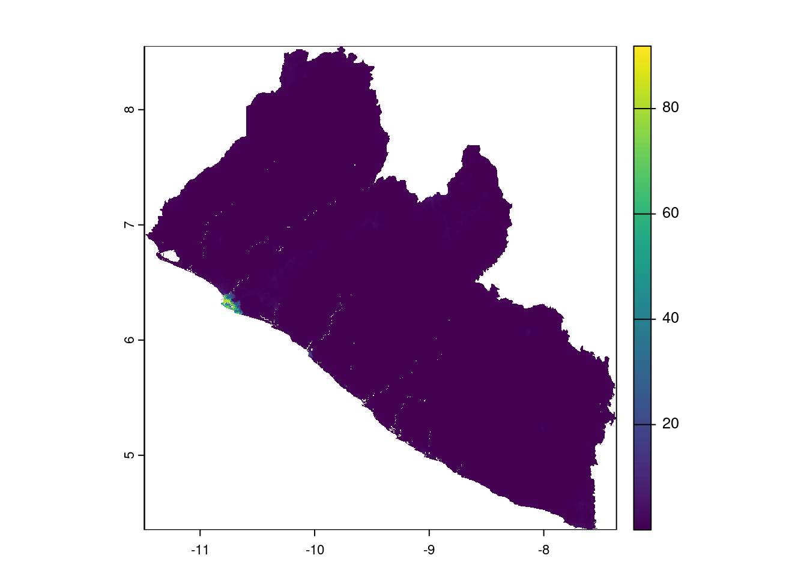
The output of print() provides a detailed summary of the raster’s properties. The rast() function reads raster files in formats like GeoTIFF, ASCII grid, or other common raster formats and then we used plot() as a quick way to visualize raster data.
2.5.3 Understanding coordinate reference systems (CRS)
When working with spatial data, especially from different sources, one of the most critical tasks is ensuring that all datasets share the same Coordinate Reference System (CRS). A CRS defines how the two-dimensional map data corresponds to locations on the three-dimensional Earth. If different layers (e.g., raster and vector data) have different CRSs, they may not align correctly when plotted or analyzed together, leading to inaccurate analyses or visualizations.
CRSs can either be:
Geographic: These use latitude and longitude coordinates to represent locations on the Earth’s surface. The most common example is WGS84 (EPSG:4326), the default CRS used by GPS and global datasets.
Projected: These convert the Earth’s curved surface to a flat map and preserve certain properties like area, distance, or direction. Examples include Universal Transverse Mercator (UTM) or Albers Equal Area projections.
In many cases, using a projected rather than a geographic CRS s preferred, especially when any summary statistic or parameter is distance-related. In a geographic CRS, distances between two points are calculated using angular coordinates (degrees), which do not translate easily into linear units like meters or kilometers. This makes interpreting distances challenging, as the length of a degree of latitude differs from the length of a degree of longitude. In contrast, a projected CRS uses a linear coordinate system (usually meters), ensuring that distances are accurately represented on a flat surface. This is important when computing spatial variograms, covariance functions, or some parameters in geostatistical models, where distance between sampling locations is a key factor. In this context, we assume that the default distance metric is Euclidean distance. However, an important exception to our recommendation arises when analyzing data across large, global-scale regions. In such cases, it is more appropriate to use a geographic CRS along with spherical distances, as these better reflect the curved nature of the Earth’s surface.
2.5.4 EPSG codes
An EPSG code is a unique identifier that defines a CRS. These codes, managed by the European Petroleum Survey Group (EPSG), are widely used in geographic information systems (GIS) to simplify the use of specific projections, ensuring that spatial data is correctly aligned and interpreted. Each EPSG code corresponds to a unique CRS or map projection, making it easier to standardize and manage spatial data from different sources.
Some key and often used EPSG codes are:
EPSG:4326: This code represents WGS84, the most commonly used geographic CRS, which uses latitude and longitude to describe locations on the Earth’s surface. It is the default CRS for global datasets and GPS systems.
EPSG:326XX: These codes represent the UTM (Universal Transverse Mercator) projection, which divides the world into zones. Each zone is optimized to preserve local distances and areas. For example (e.g. EPSG:32629: UTM Zone 29N, covering parts of Western Africa, including Liberia)
EPSG:3857: This code is for the Web Mercator projection, which is widely used for web mapping services, including Google Maps, OpenStreetMap, and Bing Maps. This projected CRS uses meters as the unit of distance and is optimized for visualizing maps on a 2D plane, though it distorts area and distance, especially at high latitudes. It is well-suited for interactive online mapping but not ideal for precise distance-based geostatistical analyses.
2.5.5 Convert a data frame to an sf object
In geospatial analysis, data is often provided in tabular formats like CSV files that contain spatial coordinates (e.g., latitude and longitude). To use these data effectively in R, it is necessary to convert the data frame into an sf object, which is the standard format for working with spatial data in R. Here we show how to achieve this, we can use the Liberia data available in the RiskMap package as it is a data frame.
# Load the RiskMap package
library(RiskMap)
# Load the Liberia data set
data("liberia")
# Convert the data frame to an sf object
liberia_sf <- st_as_sf(liberia,
coords = c("long", "lat"),
crs = 4326)
# Inspect the new sf object
liberia_sfplot(liberia_sf)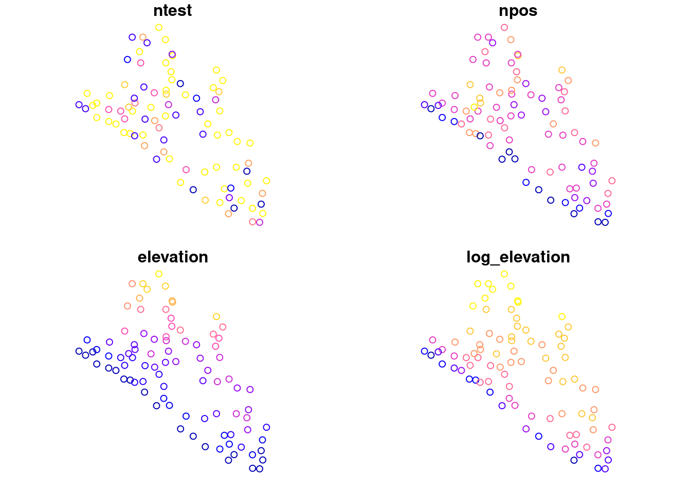
The st_as_sf() function converts the data frame into an sf object. The coords argument specifies which columns contain the spatial coordinates and the crs argument assigns the CRS that in this case we know being WGS84 (EPSG:4326). The sf object can now be used for operations such as spatial joins, distance calculations, and mapping with other spatial layers. Note that the columns containing the spatial coordinates have been replaced by a geometry column, which now stores this information. If you would like to retain the original coordinate columns in the output, you can set the remove argument to FALSE when converting the data frame to an sf object.
2.5.6 Working with CRSs in R
When working with data from multiple sources, such as environmental layers, population data, or administrative boundaries, ensuring that all datasets share the same CRS is essential for accurate spatial analysis. This section covers the core tasks involved in managing CRSs in R: checking the CRS of spatial data to ensure datasets are compatible and Reprojecting spatial data into a common CRS when necessary.
2.5.6.1 Checking the CRS of Spatial Data
Before performing any spatial operation, it’s crucial to check the CRS of your spatial datasets. Knowing whether your data uses geographic coordinates (e.g., WGS84) or a projected coordinate system (e.g., UTM) helps ensure that they are aligned and ready for analysis. Both sf and terra provide functions to retrieve and inspect the CRS, ensuring datasets are spatially aligned before analysis. The st_crs() function retrieves the CRS information for vector data.
# Check the CRS of the vector data
st_crs(liberia_sf)Coordinate Reference System:
User input: EPSG:4326
wkt:
GEOGCRS["WGS 84",
ENSEMBLE["World Geodetic System 1984 ensemble",
MEMBER["World Geodetic System 1984 (Transit)"],
MEMBER["World Geodetic System 1984 (G730)"],
MEMBER["World Geodetic System 1984 (G873)"],
MEMBER["World Geodetic System 1984 (G1150)"],
MEMBER["World Geodetic System 1984 (G1674)"],
MEMBER["World Geodetic System 1984 (G1762)"],
MEMBER["World Geodetic System 1984 (G2139)"],
ELLIPSOID["WGS 84",6378137,298.257223563,
LENGTHUNIT["metre",1]],
ENSEMBLEACCURACY[2.0]],
PRIMEM["Greenwich",0,
ANGLEUNIT["degree",0.0174532925199433]],
CS[ellipsoidal,2],
AXIS["geodetic latitude (Lat)",north,
ORDER[1],
ANGLEUNIT["degree",0.0174532925199433]],
AXIS["geodetic longitude (Lon)",east,
ORDER[2],
ANGLEUNIT["degree",0.0174532925199433]],
USAGE[
SCOPE["Horizontal component of 3D system."],
AREA["World."],
BBOX[-90,-180,90,180]],
ID["EPSG",4326]]The same can be achieved for raster data with the crs() function from the terra package.
# Check the CRS of the raster data
crs(lbr_pop_100, proj = TRUE, describe = TRUE)2.5.6.2 Reprojecting spatial data to a common CRS
If your datasets have different CRSs or if you want to change CRS (e.g. from geographical to projected) you will need to reproject one or more datasets so they can be spatially aligned. This ensures that they can be overlaid and analyzed together. For vector data, st_transform() reprojects the data into a specified CRS. This example transforms the liberia point data from WGS84 into UTM. To know what’s the correct UTM zone and hence EPSG code for Liberia we can use the get_epsg_utm function from the RiskMap package.
# MOVE THIS INTO RISKMAP
get_epsg_utm <- function(sf_object) {
# Ensure the input is an sf object
if (!inherits(sf_object, "sf")) {
stop("Input must be an sf object.")
}
# Check if the CRS is WGS 84 (EPSG: 4326)
crs <- st_crs(sf_object)
if (is.null(crs) || crs$epsg != 4326) {
stop("Input sf object must have a CRS of WGS84 (EPSG: 4326).")
}
# Get the coordinates of the centroid of the sf object
centroid <- st_centroid(st_union(sf_object))
coords <- st_coordinates(centroid)
# Function to calculate UTM zone based on longitude
get_utm_zone <- function(lon) {
return((floor((lon + 180) / 6) %% 60) + 1)
}
# Calculate UTM zone from longitude
utm_zone <- get_utm_zone(coords[1])
# Determine the EPSG code based on the latitude (north/south)
epsg_code <- if (coords[2] >= 0) {
32600 + utm_zone # Northern Hemisphere
} else {
32700 + utm_zone # Southern Hemisphere
}
# Return the calculated EPSG code
return(epsg_code)
}
# Obtain EPSG code for UTM for Liberia
get_epsg_utm(liberia_sf)[1] 32629# Reproject the vector data
liberia_sf_utm <- st_transform(liberia_sf, crs = get_epsg_utm(liberia_sf))Reprojecting raster data is more complex than reprojecting vector data due to the continuous nature of raster grids. The process involves recalculating cell values to fit a new grid based on the new CRS, which can lead to challenges like resampling, distortion, and data loss. When reprojecting a raster, the grid must adjust to the new CRS, often requiring resampling of cell values. The method you choose depends on the data type: nearest neighbor is best for categorical data like land use while bilinear or cubic interpolation is good for continuous data like temperature, where smooth transitions are needed.
The function project() from the terra package can be used to reproject a raster.
lbr_pop_100_utm <- project(lbr_pop_100,
crs(liberia_sf_utm),
method = "bilinear")Reprojecting a raster may alter its resolution. For example, reprojecting from geographic (degrees) to projected (meters) CRS can result in a mismatch between the original and new cell sizes. Moreover, distortion can occur when converting between projections, especially at high latitudes. Some cells may be stretched or compressed, leading to potential loss of information or edge artifacts. These distortions arise because the Earth is not flat, and projecting the curved surface of the Earth onto a flat plane (or vice versa) leads to trade-offs. For example, the Mercator projection preserves angles and shapes but distorts area, particularly near the poles.
For these reasons, it’s often better to reproject vectors rather than rasters when both data types are used together and avoid as much as possible to change the CRS of raster. One way to achieve this is to work with WGS84 when performing all spatial operations like extraction of covariates from rasters and then transform only the point data to a projected CRS before fitting the model.
2.5.7 Common Issues and Considerations
#NOT SURE ABOUT THIS, MAYBE EXPAND OR REMOVE
CRS Mismatch: One of the most common issues in spatial analysis is the mismatch of CRSs between datasets. Always check and reproject datasets if necessary before performing spatial operations like overlays or extractions.
Datum Transformations: In some cases, especially when working with datasets from different regions, a simple projection transformation may not be enough. You might need to handle datum shifts (e.g., from NAD83 to WGS84). R can handle these transformations, but it’s important to be aware of them.
Choosing the Right CRS: The choice of CRS depends on your study area and the type of analysis. For global studies, WGS84 is often used. For regional studies, UTM or other local projections may be more appropriate to preserve accuracy in distances and areas.
2.6 Extracting covariate data
In geostatistical models, the inclusion of relevant covariates (environmental, demographic, or climatic) can potentially enhances predictive accuracy. Covariate data often come from raster or polygon sources, and extracting these values for point locations is essential to link spatial context to point-referenced data. These covariates could include variables like temperature, elevation, land cover, or population density, which influence the spatial distribution of diseases. In this section, we will cover how to extract covariates at point locations from both polygon layers raster layers.
2.6.0.1 Extracting covariates from polygon layers
Polygon layers contain discrete spatial entities, such as administrative boundaries or land use areas, with associated attributes. Extracting covariates from polygon layers involves associating point data with the attributes of the polygon in which they fall. Here is an example with…..NEED SOME DATA FOR THIS
# Perform a spatial join to transfer polygon attributes to the points
points_with_admin <- st_join(liberia_sf, liberia_admin1["shapeName"])
# View the results, points now include covariates from the polygon layer
head(points_with_admin)This spatial join operation adds attributes (in this case the admin1 names) from the polygons to the points. These attributes can now be used in geostatistical models to explain spatial variation in disease risk based on the regions they fall into.
2.6.1 Extracting covariates from raster layers
Raster data provides continuous spatial information, such as elevation, climate data, or population density. Covariate values from raster layers can be extracted for specific points using the extract() function from the terra package. Each point will receive the value of the raster cell it overlaps.
# Extract raster values at the point locations
covariate_values <- extract(lbr_pop_100, liberia_sf)
# Combine the extracted values with the point data
liberia_sf$pop_total <- covariate_values[, 2]
# View the updated dataset
head(liberia_sf)In this example, the extract() function assigns the raster value from the population density layer to each point in the dataset. This allows the point data to include population density as a covariate in the analysis.
Instead of extracting values for exact point locations, it can sometimes be useful to aggregate covariate values within a defined area around each point. This is often done by creating a buffer around each point and calculating summary statistics (e.g., mean, sum) of the raster values within that buffer. For instance, you might want to calculate the average population density or temperature within a 2 km radius around each point to smooth out fine-scale variation.
# Create buffers around each point (e.g., 2 km radius)
buffered_points <- st_buffer(liberia_sf_utm, dist = 1000)
# Plot the buffers for visualization
plot(st_geometry(buffered_points), col = "blue", border = "black")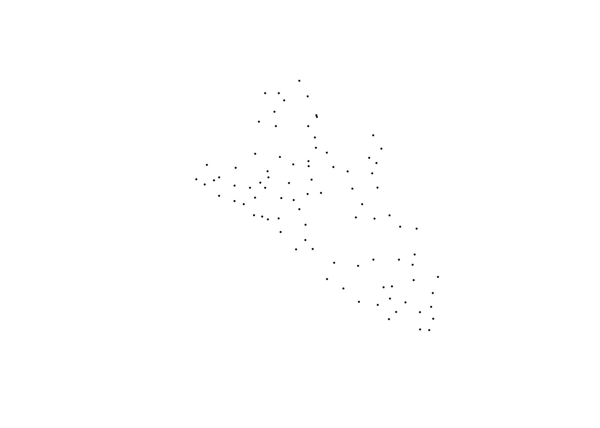
# Extract raster values within the buffer areas and calculate the
# mean or sum. Note that since we used the utm data to work on the
# meter scale we need to convert them back to WGS84
mean_pop_density <- extract(lbr_pop_100,
st_transform(buffered_points, crs = 4326),
fun = mean, na.rm = TRUE)
# Add the averaged values to the points dataset
liberia_sf$pop_mean2km <- mean_pop_density[,2]
# View the updated dataset
head(liberia_sf)You can modify the fun argument to calculate other summary statistics, such as the sum, min or max of the raster values within the buffer. This approach is particularly useful when the phenomenon being modeled (e.g., disease transmission) is influenced by broader spatial factors around the observation point, rather than just the value at the exact point location.
2.7 Creating a predictive grid
A predictive grid is a regularly spaced set of points or cells that spans the study region. This grid serves as the basis for predictions made by your model. The density of the grid (i.e., the distance between grid points) affects both the resolution of the prediction and the computational cost. For point-based predictions, we can generate a grid of points over a polygon (e.g., administrative boundary) using the sf package and the st_make_grid function.
# First we convert the Liberia boundaries to the UTM CRS
# because we want our grid in meters
liberia_admin0_utm <- liberia_admin0 |>
st_transform(crs = get_epsg_utm(liberia_sf))
# Generate prediction grid at 5km resolution
pred_locations <- st_make_grid(liberia_admin0_utm,
cellsize = 5000,
what = "centers")
# Exclude locations that fall outside the study area
pred_locations <- st_intersection(pred_locations, liberia_admin0_utm)
# Visualize the result
plot(liberia_admin0_utm$geometry, col = "white")
plot(pred_locations, cex = .01, col = "red", pch = 19, add = T)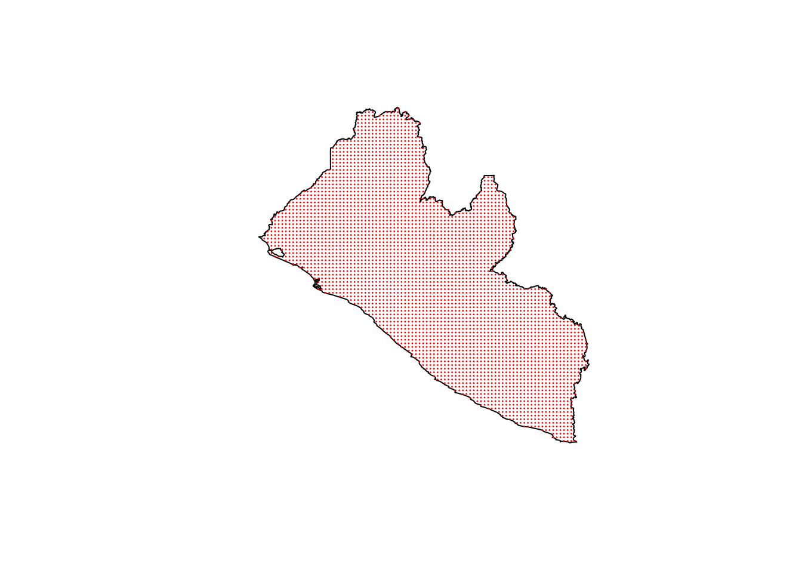
2.8 Visualizing spatial data
Visualization is a key part of spatial data analysis, as it allows you to explore and communicate spatial patterns and relationships effectively. R provides a lot of functionalities to visualize spatial data and create very beautiful maps. Until now we have used basic plotting functions. Here we introduce the ggplot2 package that allows to combine different types of geographic data in a map. The ggplot2 package in R provides a flexible and powerful framework for creating both simple and complex visualizations, including maps of point data, polygons, and rasters. With the help of extensions like geom_sf() and geom_raster(), ggplot2 makes it easy to visualize spatial data, whether you’re working with point locations, polygons, or continuous raster data.
2.8.1 Visualizing point data
Point data often represents the locations of observations (e.g., disease cases, sampling sites). ggplot2 allows you to plot these points and optionally color them by a covariate (e.g., disease prevalence or population density). Here is an example that uses the Liberia data.
# Load necessary libraries
library(ggplot2)
# Create a new variable with prevalence in the dataset
liberia_sf$prevalence <- liberia$npos / liberia$ntest
# Plot only the locations
ggplot(data = liberia_sf) +
geom_sf(col = "black") +
theme_minimal() +
labs(title = "Survey locations")
# Color the points according to prevalence
ggplot(data = liberia_sf) +
geom_sf(aes(color = prevalence)) +
scale_color_viridis_c(labels = scales::label_percent()) +
theme_minimal() +
labs(title = "Onchocerciasis in Liberia",
color = "Prevalence (%)")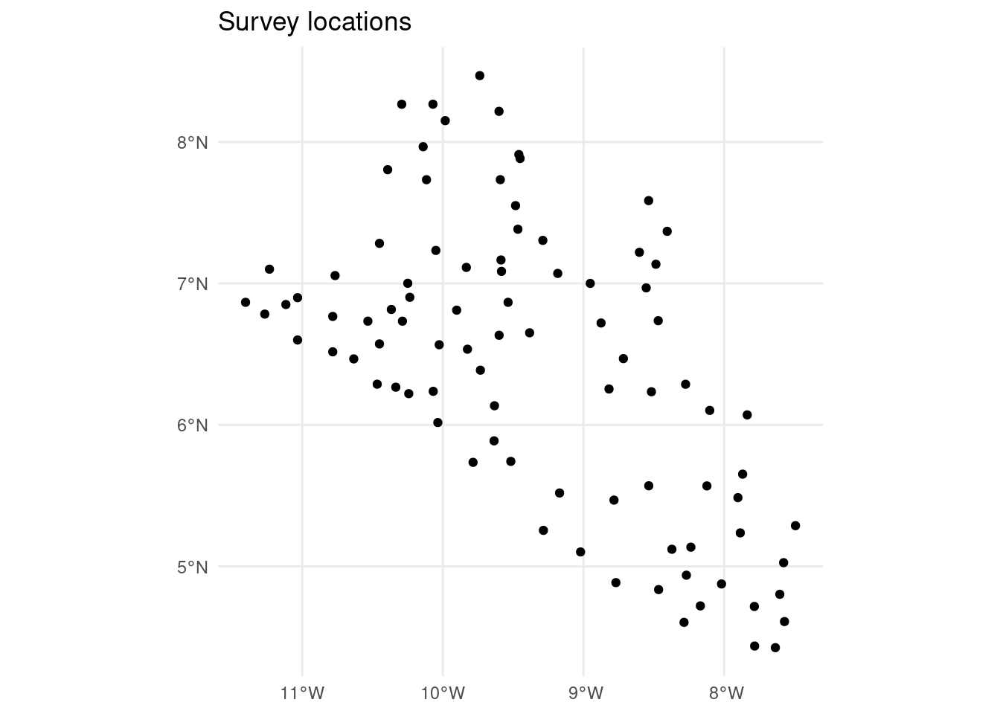
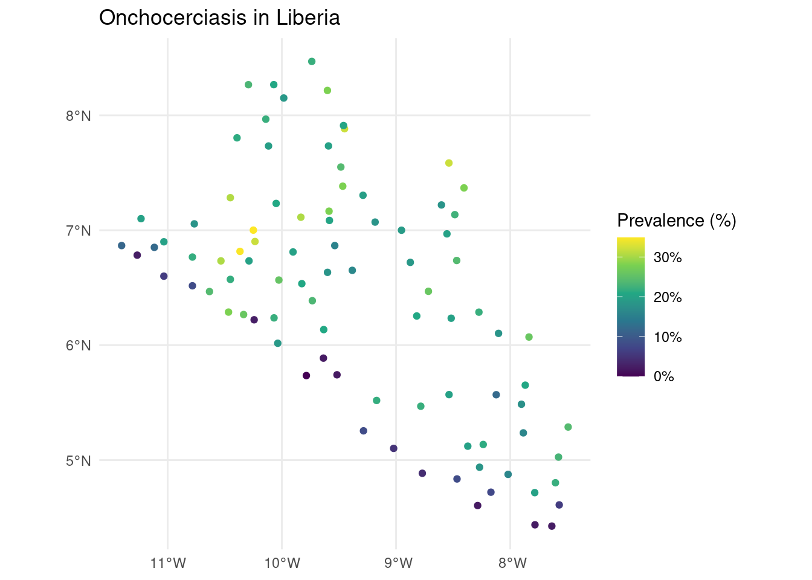
Here geom_sf() is used to plot the spatial points. aes(color = prevalence) specifies that the points should be colored based on the prevalence covariate, providing a visual representation of spatial variation in disease risk. The scale_color_viridis_c() function applies the Viridis color scale, which is well-suited for continuous data and is friendly for those with color blindness. The labels = scales::label_percent() argument ensures that the color scale’s labels are displayed as percentages (e.g., 5, 10%) rather than raw decimal values. To make the plot visually clean and minimal, theme_minimal() is applied, stripping away unnecessary background elements and keeping the focus on the data. Finally, the labs() defines the plot title and the color legend label.
2.8.2 Visualizing polygon data
Polygon data typically represents administrative boundaries, land use, or other regional divisions. We can still use geom_sf() to create maps of polygons, optionally filling them by a covariate.
# Plot Liberia admin 1 level boundaries
ggplot(data = liberia_admin1) +
geom_sf() +
theme_minimal() +
labs()
# We compute the area of each polygon
liberia_admin1$area <- as.numeric(st_area(liberia_admin1) / 1000 ^ 2)
# Color the polygons according tis new variable
ggplot(data = liberia_admin1) +
geom_sf(aes(fill = area), color = "black") +
scale_fill_distiller(direction = -1) +
theme_minimal() +
labs(fill = "Area km^2")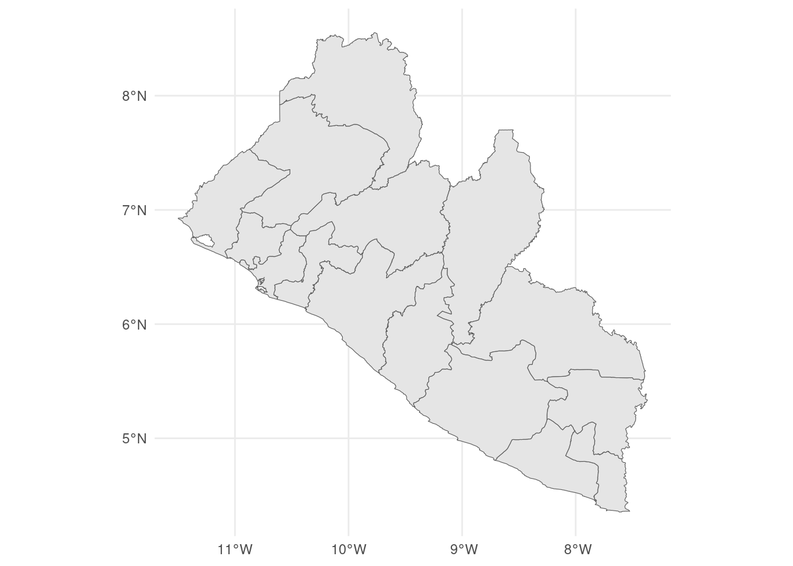
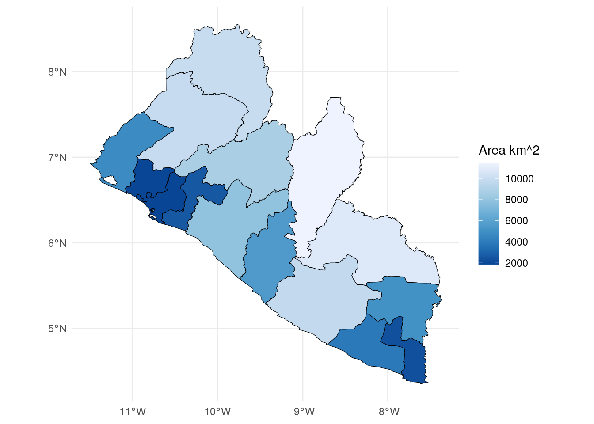
In this code, aes(fill = area) is used to fill each polygon with colors corresponding to its area. The color = "black" argument outlines the polygons in black, and you could set fill = NA to make the polygons transparent while still displaying the borders. The scale_fill_distiller(direction = -1) function applies a color gradient from ColorBrewer, with the direction = -1 argument reversing the gradient (e.g., darker colors for larger areas).
2.8.3 Visualizing raster data
In ggplot2, you can visualize raster data by converting it into a data frame of coordinates and values. You can convert raster data into a format that ggplot2 can handle by using the as.data.frame() function from terra.
# Convert the raster to a data frame for ggplot2
raster_df <- as.data.frame(lbr_pop_100, xy = TRUE)
# Plot raster using ggplot2
ggplot(data = raster_df) +
geom_raster(aes(x = x, y = y, fill = lbr_ppp_2014)) +
scale_fill_viridis_c() +
coord_cartesian() +
theme_minimal() +
labs(title = "Population Density",
fill = "Density")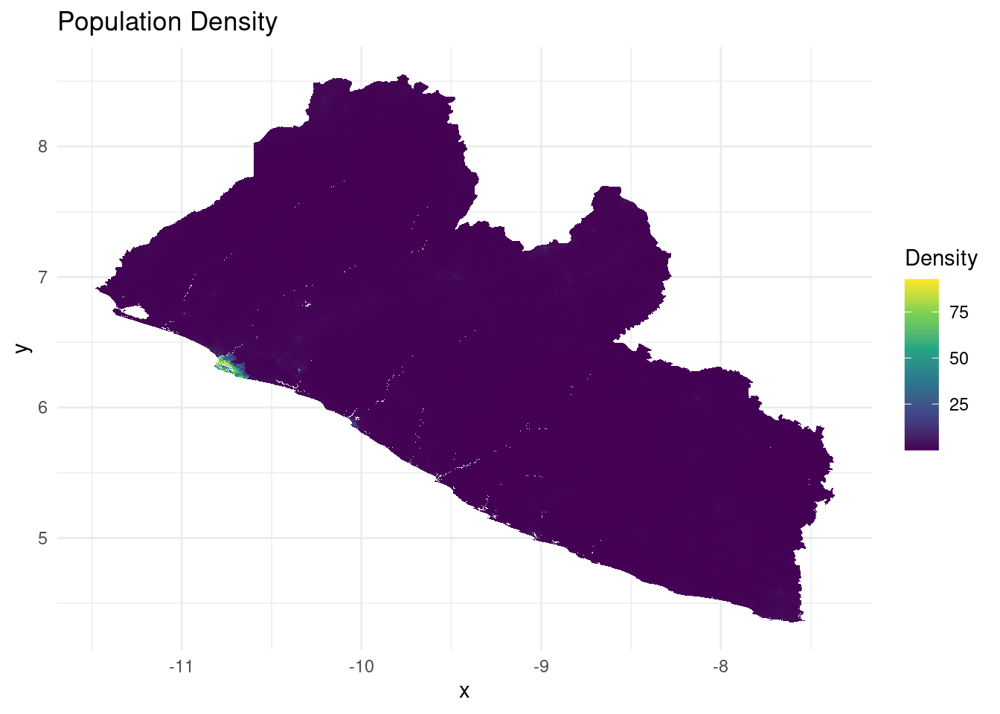
In this example as.data.frame() converts the raster into a data frame with x and y coordinates and their corresponding raster values and geom_raster() is used to plot the raster cells, coloring them based on the population density.
2.8.4 Combining Multiple Spatial Data Types
In many cases, it’s useful to combine different spatial data types (points, polygons, and rasters) in a single visualization. ggplot2 allows you to overlay these layers, providing a more comprehensive view of your spatial data.
# Combine points, polygons, and raster data in one plot
combined_map <- ggplot() +
geom_raster(data = raster_df, aes(x = x, y = y, fill = lbr_ppp_2014)) +
geom_sf(data = liberia_admin1, fill = NA, color = "grey") +
geom_sf(data = liberia_sf, shape = 21, col = "black", fill = "white") +
scale_fill_viridis_c() +
theme_minimal() +
labs(title = "Combined Spatial Data: Points, Polygons, and Raster",
fill = "Population Density",
x = "", y = "")
combined_map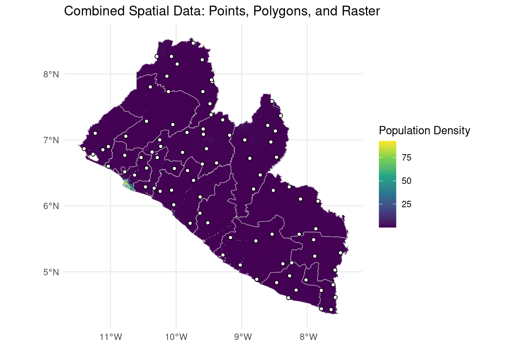
To enhance spatial visualizations in ggplot2, adding a scale bar and a north arrow improves map readability and professionalism. The ggspatial package offers tools to easily integrate these elements into your maps. Below is an example that demonstrates how to use ggspatial to add a scale bar and north arrow to a map that includes raster, polygon, and point data.
# Load necessary libraries
library(ggspatial)
# Add scale bar and north arrow
combined_map +
annotation_scale(location = "bl", width_hint = 0.5) +
annotation_north_arrow(location = "tr", which_north = "true") 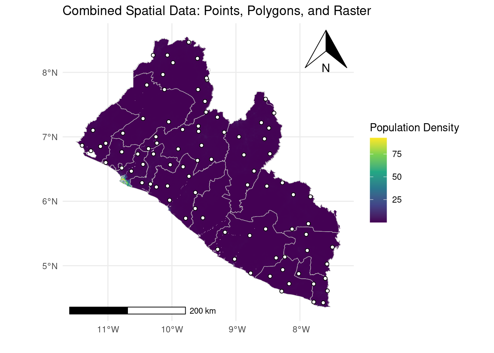